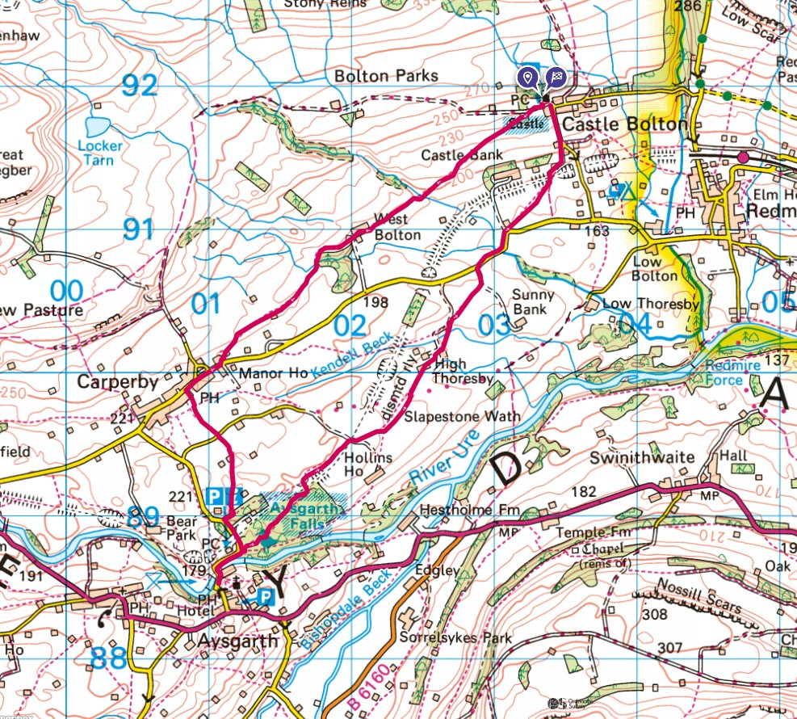

A regular Wensleydale parking spot for the family with a public toilet and what used to be free parking, now pay and display. Here is the route, a simple anti-clockwise loop starting and ending at Castle Bolton.

Firstly, here are a couple of pics of Bolton Castle near Leyburn.


Leaving Tiggy in the car park.

Walk past the castle South West to Carperby across various fields with sheep. Along the main road of Carperby for a hundred metres or so then across more fields down to the woods by Aysgarth falls.


A quick mooch about Aysgarth falls and into Aysgarth, over the bridge to visit the Yore MIll Craft Shop and Gallery by the bridge.


The route back is back through the woods with a steady, easy uphill climb slowly away from the river through more fields - heading straight towards the Castle on the horizon.